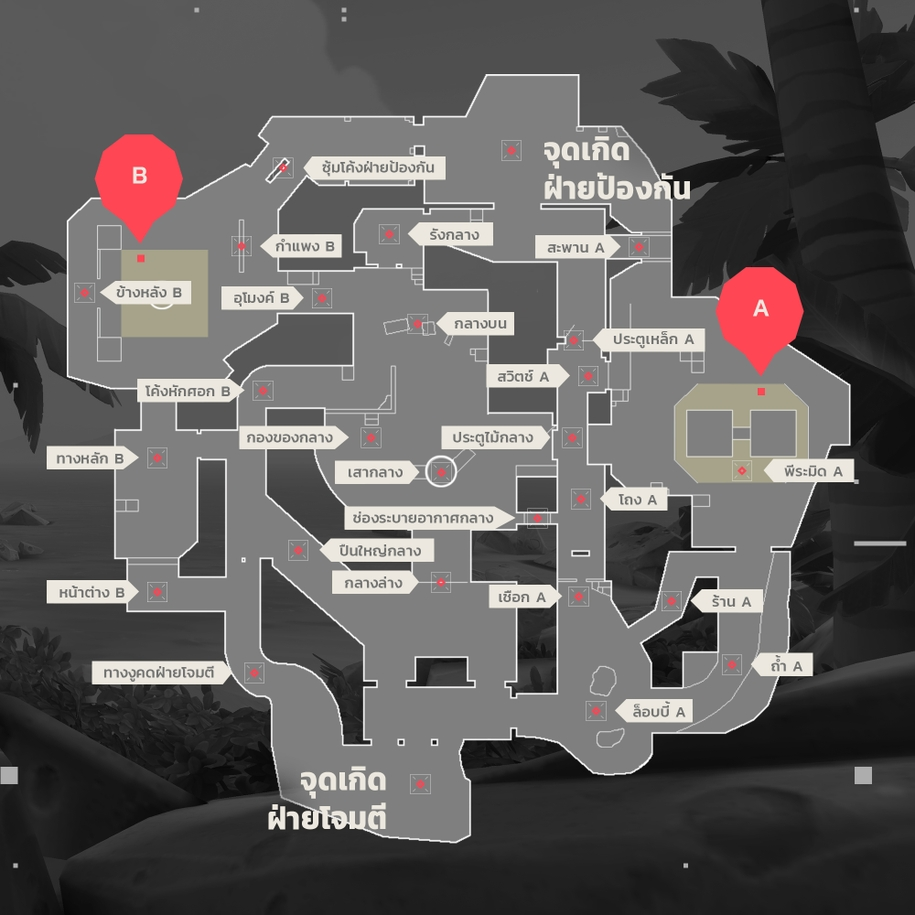
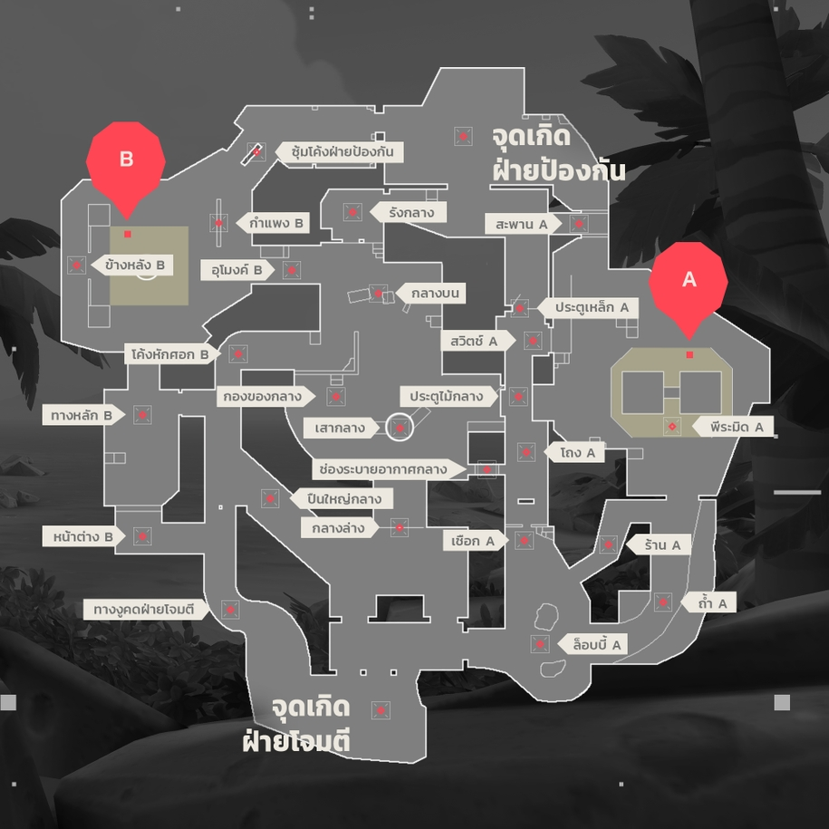
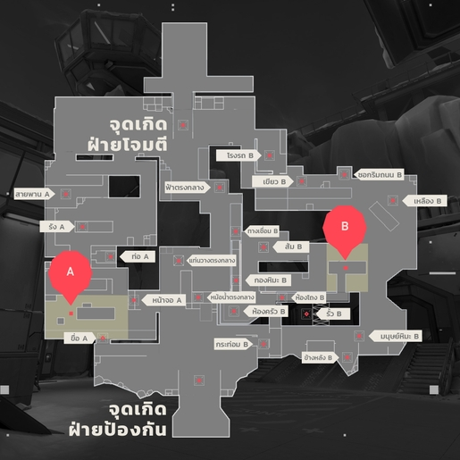
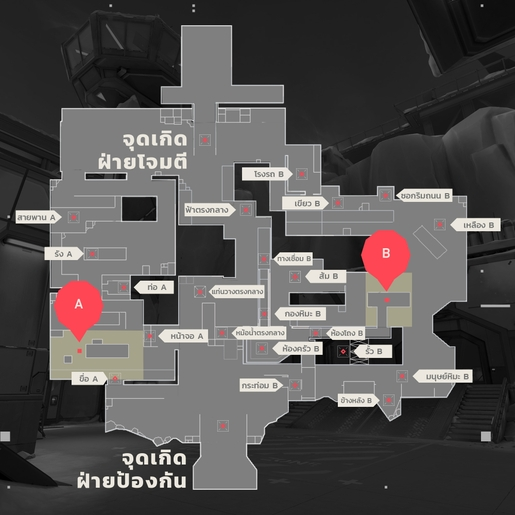
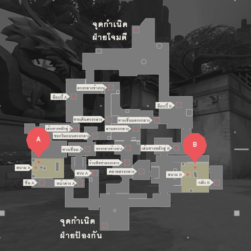
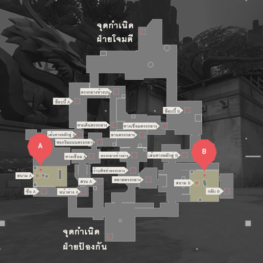

valorant
มันเป็นเกมยิงปืนแบบแบ่งฝั่งๆ ละ 5 คน โดยจะมีรอบในการเล่นอยู่ทั้งหมด 13 รอบด้วยกัน ซึ่งแต่ละฝั่งจะถูกสลับให้เป็นทั้งฝั่งโจมตี และฝั่งป้องกัน หลายคนอาจมองว่ามันคล้ายกับเกมแนว FPS ทั่วไป แต่สิ่งที่แตกต่างคือ การวางแผนที่สูงขึ้น และเน้นความสามารถของตัวละครที่เรียกว่า “เอเจนท์” ที่ตอนนี้มีอยู่ด้วยกันทั้งหมด 13 ตัว


 


 



 
